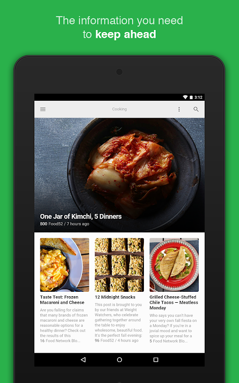
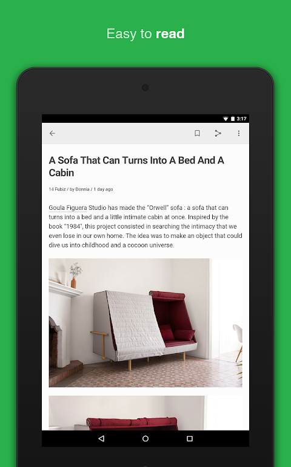

Feedly 快速问查：从入门到进阶的 8 个必答问题
用快问快答的方式把 Feedly 的核心用法讲透——谁在用、怎么装、三种视图、搜索运算符、收藏板与稍后读的分工、免费版够不够、值不值得长期装。
整理一篇关于 Feedly 的快问快答。
Q1：Feedly 到底是个啥？
Feedly 是一个 RSS 阅读器——简单说就是把你关心的博客、媒体、技术站点的更新统一汇总到一个地方，让你不用挨个刷网站。它的官网上有数百万安装量，Google Play 评分 4.5，Aptoide 4.35，截至 2026 年仍保持更新。和传统 RSS 工具比，它最大的不同是自带 Discover 页帮你找新来源，以及 Leo AI 助手可以帮你过滤噪音、做关键词监控。

Q2：谁真的需要它？
四类人最能发挥它的价值：记者和内容创作者用它找选题，市场研究员用它做品牌和竞品监控，开发者和技术爱好者用它建技术知识流，普通读者用它告别刷不完的推荐流。如果你每天在多个网站之间来回跳、收藏夹越积越多、信息流里推送越来越不对味，那它就是给你做的。
Q3：怎么装？
Feedly 有网页版、iOS 和 Android 客户端。安装包从官方下载拿就行，各版本更新频率差不多，网页版功能最完整，手机端主打随身阅读体验。
Q4：三种文章视图怎么选？
列表、杂志、卡片三种视图，适合不同类型的内容：新闻快讯和高密度更新的内容用列表视图扫读最快；深度文章和周刊类内容用杂志视图（左图右文带摘要）；设计、摄影这类视觉向内容用卡片视图最直观。视图是按收藏夹记忆的，新闻夹用列表、设计夹用卡片，互不影响。刚起步时可以先这么配：新闻类用列表，深度内容用杂志，用两周后按跳过率微调。

Q5：搜索怎么搜得准？
普通搜索就是给个词碰运气，用上运算符才能下精确指令。几个高频写法：AND（大写）表示同时包含两个词，OR 表示包含任一，减号（前面带空格）排除某个词，英文直引号包起来是精确短语。AND 其实可以省略，直接写两个词默认就是 AND。组合示例："新能源车" 出口 -皮卡 就是同时含精确短语"新能源车"、含"出口"、不含"皮卡"。想让搜索结果只出标题，可以在界面选"仅标题"选项——找报道比找概念快得多。写错了也别慌，结果为零多半是 AND 条件太苛刻，减少一个词试试；运算符没生效检查大小写和空格。
Q6：稍后读和收藏板搞不清？
稍后读是"待办队列"——今天没读完的长文暂存，读完就清，单一列表按时间倒序。收藏板（Boards）是"资料室"——围绕一个主题、一个项目长期收集，比如"竞品动态""AI 监管""选题库"，可以多块并存。保存动作共用那个书签按钮，点开弹窗选存到稍后读还是某块板。存进收藏板时还能附一句话笔记，将来翻板子时比重读原文省十倍时间。经验值：个人用户同时活跃的板不超过 5 块，多了说明你在拿它当书签工具用。收藏板的导出、共享和团队协作玩法，Feedly文档里有完整说明。
Q7：免费版够不够，要不要付费？
免费版的额度对个人日常阅读来说基本够用：可以收藏夹订阅来源、三种视图切换、稍后读和收藏板、基础搜索。付费版主要多了关键词提醒（自动监控品牌/竞品/人物的新消息）、Leo AI 助手（帮你过滤噪音、优先推送相关内容）、团队协作（收藏板共享）和更高的订阅源数量上限。如果你是市场研究员、需要长期监控竞品动态，那付费版值得；如果只是自己刷博客看新闻，免费版完全够用。
Q8：和同类比优势在哪，值不值得长期用？
Feedly 的核心优势是 Discover 页帮你找新来源、Leo AI 过滤噪音、跨设备同步体验顺滑，以及社区生态比较成熟——网上能找到大量的使用教程和关键词提醒模板。缺点是免费版的订阅源数量有上限（虽然日常够用），以及 Leo AI 目前没有完全本地化。
关于 Feedly 的更多参数和进阶玩法，网上资料也不少。最后说一句：如果你想摆脱推荐流的算法操纵、把信息来源重新握在自己手里，Feedly 是目前最稳的选择——哪怕先从免费版用起，也会比刷信息流舒服得多。